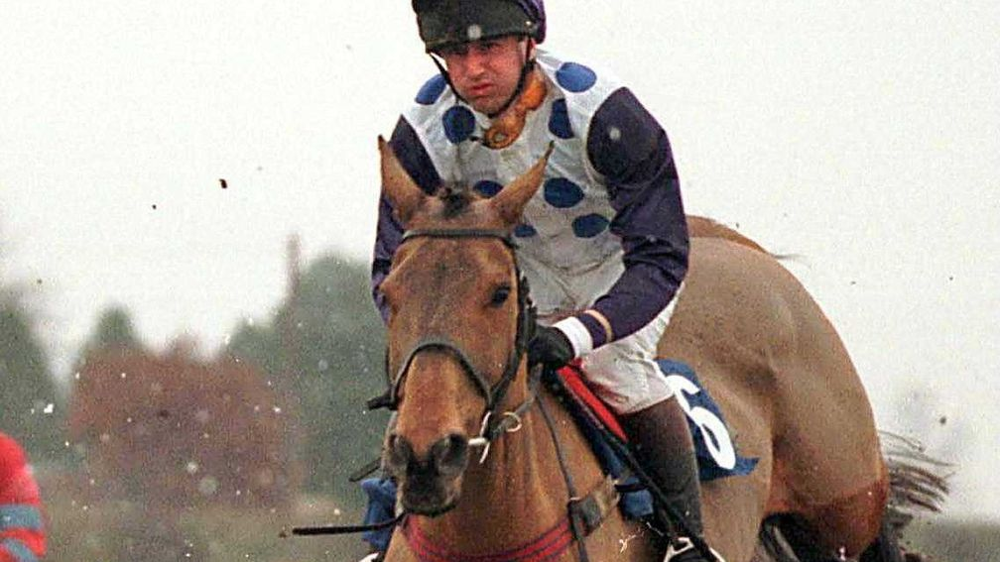

Dù không một lần chạm tay vào ruy băng chiến thắng, Quixall Crossett lại sở hữu lượng fan đông đảo không kém gì những nhà vô địch. Chú ngựa này dạy chúng ta rằng: Chiến thắng không phải là tất cả, điều quan trọng là bạn vẫn tiếp tục chạy.
Thành tích đặc biệt: Xuất phát 103 lần, về đích an toàn và chưa bao giờ từ bỏ.
Quixall trở thành chú ngựa đua duy nhất nổi tiếng toàn cầu vì... không bao giờ thắng, nhận được hàng ngàn thư từ người hâm mộ mỗi năm.